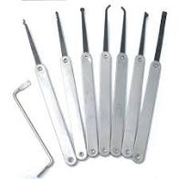
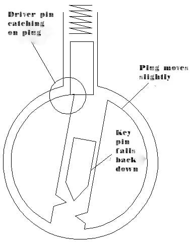

There are a wide range of tools one can use to pick a lock. For this lesson we’re going to focus on using the most common tools out there: pick rakes and a tension wrench.
Here the tension wrench is on the left and the pick rakes are lined up on the right.
Lock picking is less of a science and more of an art. Every lock is different and you definitely need to develop a feel for it, but the same basic principles always apply. The most simple way to pick a lock is a fast and dirty one: scrubbing.
The tension wrench is key (pun definitely intended) to picking a lock successfully. People often mistakenly believe the most important part is the pick, because that's what is lifting the key pins up to be in line with the shear line.
The tension wrench is important because as you’re lifting up the pin sets with the pick, you need to also apply tension on the plug using the wrench. If the proper amount of torque is applied on the plug, as soon as the driver pin passes the shear line, the plug will rotate slightly. Then when you pull your pick out, the key pin will fall back down, however the driver pin will catch the side of the plug, therefore staying above the sear line. Below is a diagram of this.
You can keep lifting pins with you pick and applying tension to the plug with the wrench until all the driver pins are clear of the shear line.
So next you take your tension wrench and put it in the bottom of the hole. Then you want to apply slight pressure in the direction you would turn they key. When we say slight we mean slight, if you push to hard this will cause the driver pins to bind in beneath the shear line. You must have enough “give” to allow the driver pins to pass above the shear line, and have enough torque that when they begin to drop down, an edge of the driver pin catches the plug as it begins to rotate. How much pressure is to much? If your wrench is bending a significant amount, then chances are you’re applying to much pressure. So err on the side of caution when it comes to pressure.
Next you should slide the rake of your choice all the way to the back.
You want to keep applying slight pressure on your wrench. I recommend using your non-dominant hand for this. With your dominant hand, rake or “scrub” (the name of the technique we’re using remember!) the inside of the plug with the pick. AS you are pulling the pick back, lift it up in order to apply pressure on the pins.
You should keep applying torque on the wrench and scrubbing all of the pins until they set. You probably will need to apply more pressure to the pins with your pick as you approach the last one or two pins that need to set. If you’re not really getting anywhere there’s a good chance you applied to much torque on the wrench. Relax, reset the pins and start all over again, focusing on not using to much pressure.